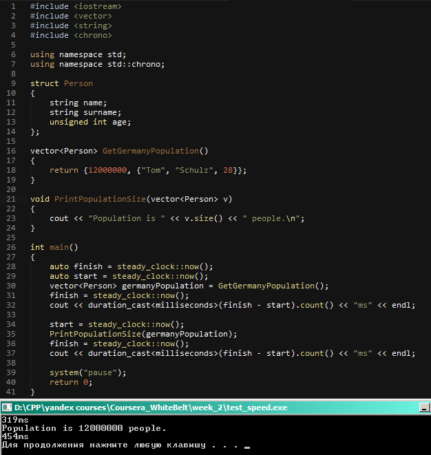
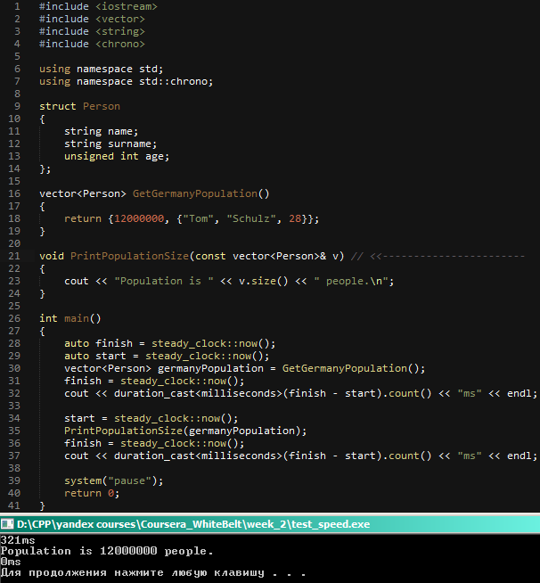

Принцип работы как и в С:
Неконстантный указатель на неконстантные данные:
Объявление:
void func(char *ptr);
Применение:
char phrase[] = "Hello!";
func(phrase);
Неконстантный указатель на константные данные:
Объявление:
void func(const char *ptr);
Применение:
const char phrase[] = "hi";
func(phrase);
Константный указатель на неконстантные данные:
Объявление:
int * const ptr = &x;
Константный указатель на константные данные:
const int * const prt = &x
Передача по ссылке...
Допустим, есть некая структура Person, содержащая имя, фамилию и возраст человека:
struct Person
{
string name;
string surname;
unsigned int age;
};
И есть некий вектор, в котором собраны все люди, участвовавшие в переписи через функцию (тело функции нас не интересует):
vector<Person> GetGermanyPopulation();
vector<Person> germanyPopulation = GetGermanyPopulation();
Получается, что в нашем векторе germanyPopulation 82 миллиона записей, каждая из которых хронит по 2 строки и одному значению типа uint.
Напишем простую функцию, которая печатает размер нашего вектора:
void PrintPopulationSize(vector<Person> vec)
{
cout << "There are " << vec.size() << " people." << endl;
}
Такая функция будет выполняться несколько секунд и даже дольше, чем функция GetGermanyPopulation(), т.к. весь вектор germanyPopulation с 82 миллионами записей будет скопирован в функию.
Чтобы избежать такой долгой и ненужной работы программы, занчение лучше передавать по ссылке:
void PrintPopulationSize(vector<Person>& vec)
{
cout << "There are " << vec.size() << " people." << endl;
}
Выполнение функции печати теперь занимает доли секунды времени, но накладывает определенные ограничения - нельзя использовать подобную конструкцию:
PrintPopulationSize(GetGermanyPopulation());
По правилам С++ результат вызова функции не может быть передан по ссылке в другую функцию. Выходом может быть использование промежуточной переменной:
vector<Person> germanyPopulation = GetGermanyPopulation();
PrintPopulation(germanyPopulation);
Но это нерационально, если нам требуется только вывести результат, а не хранить его.
В таком случае следует использовать модификатор const:
void PrintPopulationSize(const vector<Person>& vec)
{
cout << "There are " << vec.size() << " people." << endl;
}
...
PrintPopulationSize(GetGermanyPopulation());
Вызов функции PrintPopulationSize теперь отрабатывает корректно.

После добавления & к принимаемому параметру.
